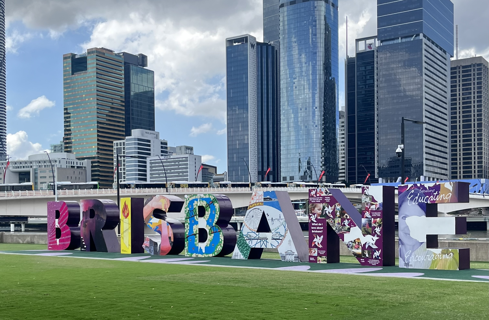
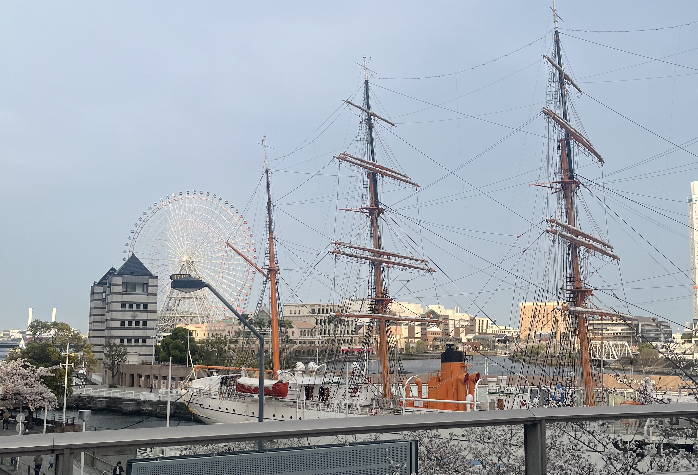

Research Note
研究テーマの検討
関心のあるテーマを洗い出し、卒業論文として扱える問いに整理しています。テーマが広がりすぎないように、対象や目的を絞ることを意識しています。
 Hikaru
Hikaru
Graduation Thesis / Research
卒業論文に向けて、研究テーマの設定、先行研究の調査、調査方法の検討を進めている研究活動の記録です。

Research Overview
卒業論文に向けて、研究テーマの設定、先行研究の調査、調査方法の検討を進めています。今後は、研究の進行に合わせて活動記録や考察を追加していきます。
Research Theme
研究テーマは現在整理中です。関心のある領域、先行研究で明らかになっていること、自分が検証したい問いをつなげながら、仮説と分析方法を固めていきます。
Activity Log
研究の進行に合わせて、メモや調査内容をこの記事カードへ追加していく予定です。
Research Note
関心のあるテーマを洗い出し、卒業論文として扱える問いに整理しています。テーマが広がりすぎないように、対象や目的を絞ることを意識しています。
Research Note
関連する先行研究を探し、研究の背景や既に分かっていることを確認しています。今後は引用候補や論点を整理していきます。

Research Note
仮説、調査方法、分析の流れを整理しています。研究の進行に合わせて、活動記録や考察をこのページに追加していきます。
まとめ / 学んだこと
現時点では、研究テーマを明確にするために、関心のある領域を整理し、先行研究と自分の問いをつなげる作業を進めています。今後は、調査と分析の進行に合わせて学びを追加していきます。